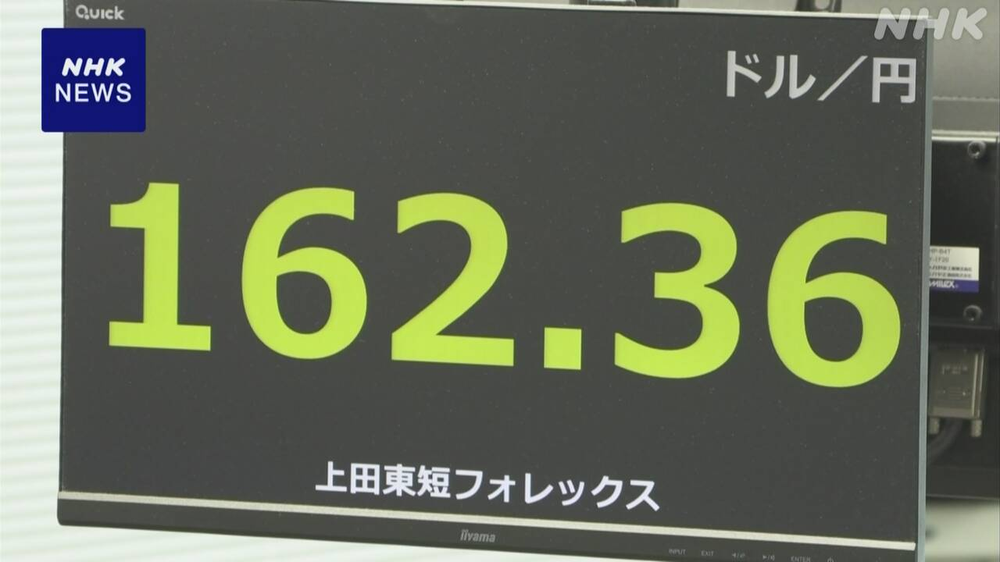

最新ニュース
1️⃣ サッカーのワールドカップ 日本はブラジルに1対2で負けた
サッカー、ワールドカップの決勝トーナメントで、日本はブラジルと試合をしました。
世界での強さの順番は、ブラジルが6番、日本が18番です。
日本は前半、みんなでよく守ってブラジルに点を取られませんでした。そして、佐野海舟選手が素晴らしいシュートを決めて、先に1点を取りました。
しかしブラジルは、後半が始まるとシュートを決めて、後半が終わる少し前に2点目のシュートを決めました。
日本は1対2で負けました。
森保一監督は「日本のレベルは世界のトップに近くなってきていると思う。しかし、勝つためにはもっとレベルアップしないといけない」と話しました。
2️⃣ 1ドル=162円台 円がとても安くなっている

日本の円が、お金の市場でとても安くなっています。
東京外国為替市場で、6月30日の午前、1ドルが162円台になりました。
前に162円台になったのは1986年12月でした。そのあと39年ずっと、円がこれほど安くなったことはありませんでした。
今年は、アメリカなどとイランの戦いが起こって、いろいろな物の値段が上がっています。円が安くなると、物の値段がもっと上がるかもしれません。このため、日本の経済が悪くなるかもしれないという心配も出ています。
3️⃣ 7月は2500以上の食べ物や飲み物の値段が上がる
たくさんの食べ物や飲み物の値段が上がっています。
帝国データバンクという会社によると、7月は、2566の品物の値段が上がります。
ことしは11月までに、1万4902の食べ物などの値段が上がると言っています。
いちばん多いのは、工場で作った冷凍食品やパックごはんなどの「加工食品」です。次に多いのは、しょうゆなどの「調味料」です。
調べた会社は「石油から作る物の値段や運ぶお金が高くなっています。円が安いので輸入にもお金がかかります。値段はこれからも上がるでしょう」と話しています。
4️⃣ 栃木県 男性が畑で熊に襲われてひどいけがをした
6月30日の朝早く、栃木県那須塩原市で、73歳の男性が熊に襲われました。
男性は山の近くの畑で仕事をしていました。
警察によると、男性は「助けてほしい」と言って、近くの家に逃げてきました。
顔にひどいけがをしていました。
近くには学校があります。
30日、子どもたちは、学校のバスを使ったり家族に来てもらったりして、家に帰りました。
警察は、近くに熊がいないか見て回っています。そして、熊に気をつけるように言っています。
- 〜らしい
- 〜前に
- 〜ている / 〜でいる
- 〜と思う
- 〜し、〜し
- 〜しか〜ない
- 〜いけない
- 〜ため
- 〜ため(に)
- 〜ても / 〜でも
- 〜になる
- 〜ほど
- 〜こと
- 〜後 / 〜あと
- 〜ず / 〜ずに
- 〜など
- 〜かもしれない / 〜かもしれません
- 〜という
- 〜によると
- 〜までに
- 〜まで
- 〜や〜など
- 〜から
- 〜ので
- 〜がある / 〜がいる
- 〜てもらう / 〜でもらう
- 〜たり〜たりする
- 〜ように
vebaev.github.io
Generated: 2026-06-30 12:09:59 UTC